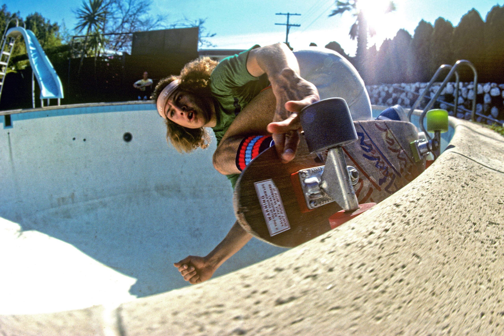
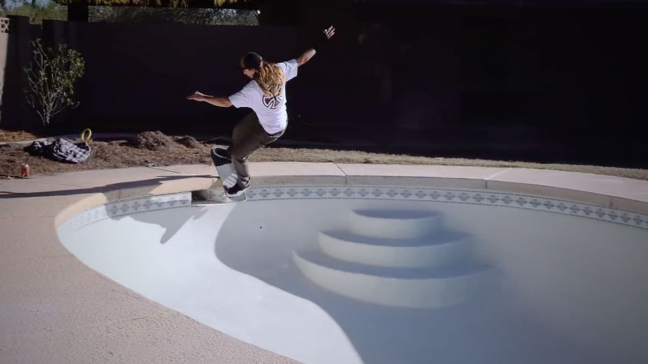
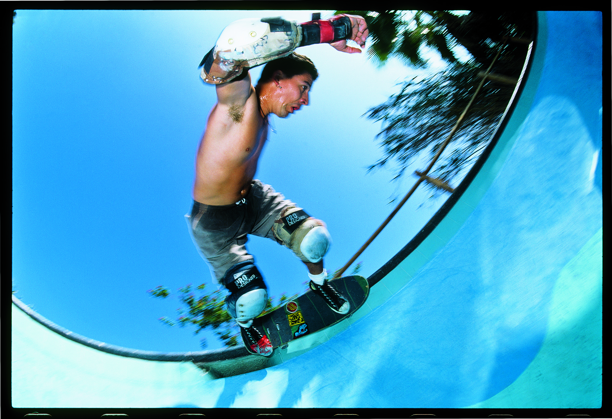
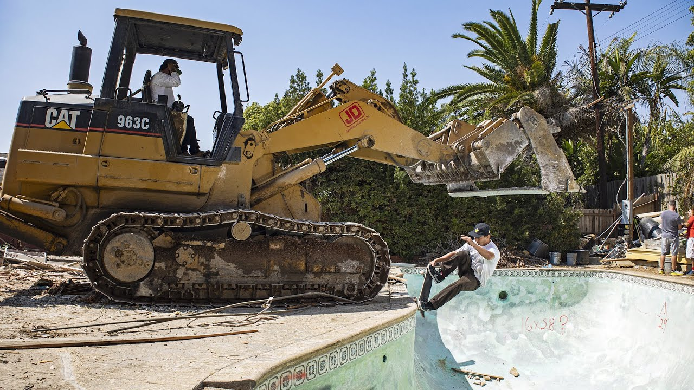

TONY ALVA

Credited as the first person to ever skate a pool, its undeniable to recognize and respect the impact he's had on skateboarding and culture in general. Aside from the skating, his attitude and rebellion has inadvertantly inspired multiple generations to break the rules and push the envelope for making the obstacles and landscapes that are right in front of us usable in an entire new manner. Skateboarding may never have progressed to its current state without him. Imagine seeing an empty pool for the first time and thinking it could provide any other utility. He selflessly created a monster.
JOHN WORTHINGTON

Given the fact that pools aren't meant to be skated, John Worthington has an uncanny ability make tight transitions and unpredictable texture look smoother than a skatepark. His skating can't be translated by photo or video, it has to be seen in person to understand how he connects lines and makes near vertical pool walls look like flat surfaces. A good pool skater can utilize all the unique aspects of a pool to their advantage, turning diving boards and water slides into a skateable obstacle. John thrives here. A common phrase and goal in pool skating is to get over the "cake", a term defining the stairs located in the shallow end of pools. John takes the cake every time.
STEVE ALBA

This man is 61 years old, and you'd be hard pressed to find anyone else that exuberates the willingness to trespass, bucket filty water, and rip pools more than Steve Alba. He was there at the beginning of the pool era, and he still spends his time sludging water and hopping fences 40 years later. Pool skating is certainly a testament to skillful skating in general, but Alba exemplifies with his whole personality that the dedication, risk, and labor behind even finding a rideable pool is arguably more impressive than the tricks that happen after the fact. You're lucky to even get any tricks at all.
GRANT TAYLOR

Grant Taylor has skateboarding in his DNA. The child of Tom Taylor, a legend tracing back to the infancy era of skating, he was destined to be something special. Grant doesn't necessarily fit the mold of the die-hard pool skater, because he's too good. He doesn't have time to be waiting for thousands of gallons of water to pump out of a deep end. But when the sludge dries he will knock the doors off what you thought was possible on the nearly vertical walls of a pool surface. He is a good example of why we made this site. What good is a perfect pool if someone can't maximize its potential? Don't invite the whole town but make sure that someone worthy can get it while the getting is good.